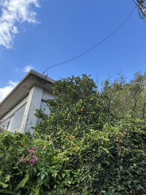
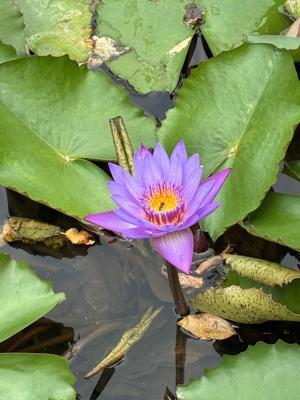
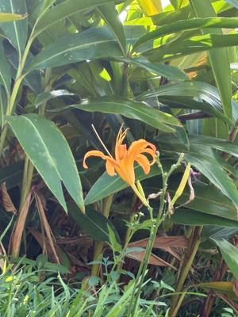
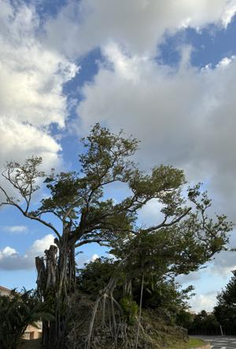

うるがいの話 ある日
最新: 父親方のいとこ達【うるがいの話 ある日】とは 一日だけのプログです
『うるがいの話』の最新一日だけのプログで、通信料が少なく経済的だ。カニの画像をクリックすると全ての日付が載る『うるがいの話』サイトを表示します
|
|
【うるがいの話】 うるがい(ｳﾙｶﾞｲ urugai)とは、『もずくがに』の名前でとても大きくなります。 |
|---|---|
|
|
【カミマヤーの話】 猫のことを方言でマヤーといいます。カミマヤー（kamimayaa）とは、神の猫のことです。 |
|
【たながぁの音楽】 たながぁ（ﾀﾅｶﾞｰ tanagaa）とは手長えびのことで、何種類かあり大きいのは車 エビぐらいになります。 |

|
【ぶながぁの話】 ぶながぁ(ﾌﾞﾅｶﾞｰ bunagaa)とは、赤い髪の毛、赤い身体、そして身長は１ｍ２０ｃｍ ぐらい、川の蟹を食べているの目撃された。場所は沖縄県国頭郡大宜味村のと ある村僕の隣近所に住んでいる爺さんから、聞いた話です。 |
|
|
【ギーマの話】 ギーマ(giima)とは、山原の里山に咲くスズランに似た、 花を付けます。実は食べられます、 気が付くと口の周りが紫になっています。 |
2026年11月08日 (日）父親方のいとこ達
14:58

寝小便した妹のパンツを、水道で洗っているのにとても驚いた
といつも会うたびに言っていた父親の弟のヨメさん（喜屋武出
身、享年８９）の葬儀に行きました。小学生の低学年のとき妹
たちと一緒に小母さん達の所へあずけられた時の事です。ん、
確かに今、私が小母さんの立場だったら驚く。あずけられた時
の小さい家の事は、薄っすらと記憶がある。


きのう電話で伝えられた葬儀場に早めに着く（７時、葬儀場に
入れたのは８時２５分）。誰もいない駐車場にポツネン、心配
になってい従妹に電話すると、当たっていると）。８時過ぎに
女性３名が、車から降りる。おお！、小母さんそっくり、従妹
達である。葬儀場の駐車場のガジュマルの大木

いろいろと近況を話し合う。小母さんを介護していた従妹の話
旦那さんは、自衛隊を５５歳で定年退職し、病院のヘリコプタ
ーの操縦士の仕事を、・・・・、４年前に航空事故で亡くなり
ました。え！、あれ、『そうです、アレです』と
２０２２年３月１２日
つい先日沖縄県のＮＰＯ法人ＭＥＳＨサポートの小型飛行機が
訓練中に墜落しパイロットと指導官２名が亡くなりました。
訓練パイロットの男性は元航空自衛官で操縦歴約４０年のベテ
ランパイロット。
身長１８０センチの高校３年の息子さんと、バスケットの話を
する。いまは、受験で頑張っていると言っていた。喪主をして
いる叔父さんに似た従兄弟にも声をかける。